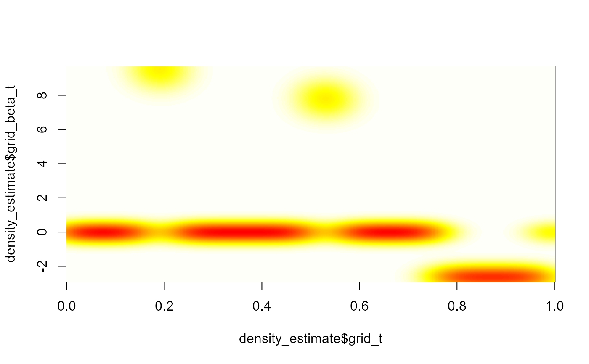

compute_beta_posterior_density.RdCompute the posterior density of the coefficient function.
compute_beta_posterior_density(beta_sample, param, verbose = FALSE)
| beta_sample | a matrix. Each row is a coefficient function computed from the posterior sample. |
|---|---|
| param | a list containing:
|
| verbose | write stuff if TRUE (optional). |
An approximation of the posterior density on a two-dimensional grid
(corresponds to the result of the kde2d function).
The posterior densities correponds to approximations of the marginal
posterior distribitions (of beta(t) for each t).
The sample is thinned in order to reduce the correlation and the
computational time of the function kde2d.
library(RColorBrewer) data(data1) data(param1) # result of res_bliss1<-fit_Bliss(data=data1,param=param1) data(res_bliss1) q <- 1 param_beta_density <- list(grid= data1[["grids"]][[q]], iter= param1[["iter"]], p = param1[["p"]][q], n = length(data1[["y"]]), thin = param1[["thin"]], burnin = param1[["burnin"]], lims_kde = param1[["lims_kde"]][[q]], new_grid = param1[["new_grids"]][[q]], lims_estimate = range(res_bliss1$Smooth_estimate[[q]])) density_estimate <- compute_beta_posterior_density(res_bliss1$beta_sample[[q]],param_beta_density) image(density_estimate$grid_t, density_estimate$grid_beta_t, density_estimate$density,col=rev(heat.colors(100)))